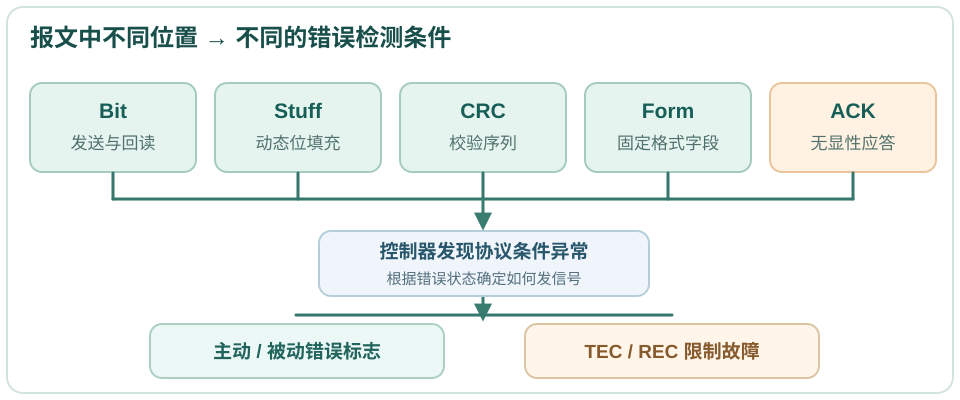
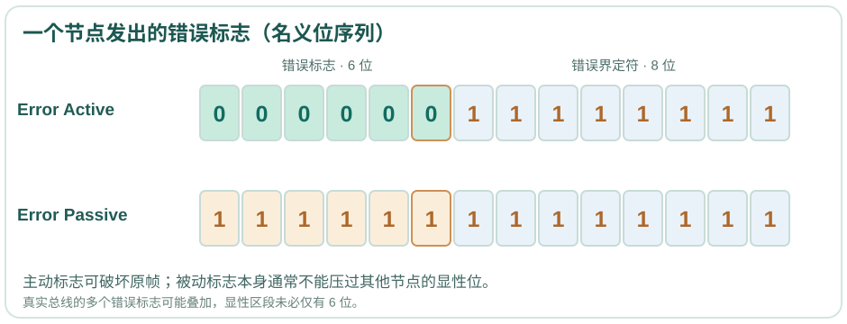
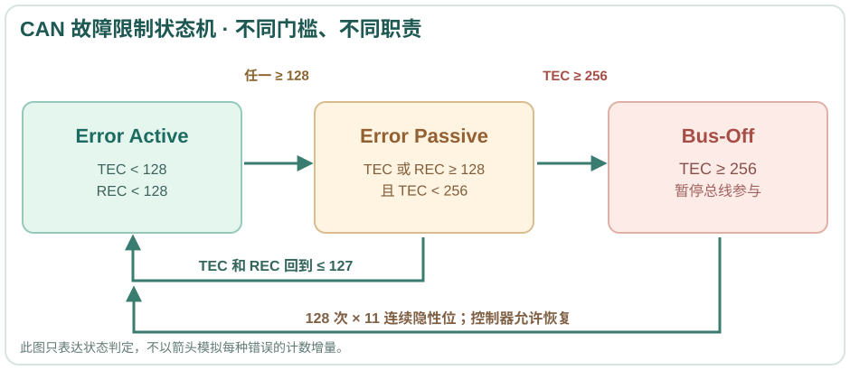

一帧 CAN 报文出错后，总线如何阻止故障蔓延？
从 ACK 错误的抓包现场出发，逐层拆开五类错误、主动与被动错误标志、TEC/REC 状态机，以及 Bus-Off 的恢复条件。
假设只有一块 CAN 开发板接在总线上，收发器和终端电阻都正常，但控制器却反复报 ACK Error。这是线路一定损坏了吗？不一定：在正常发送模式下，发送者必须获得其他节点在 ACK 槽中的确认。没有能应答的接收者，即使线路本身无故障，发送者也可能遇到 ACK 错误。理解这一点，需要把检测到什么错误和节点因此进入什么状态拆开看。
检测、通知、限制故障：其实是三件不同的事
一个正常通信的 CAN 控制器会检查总线位和帧结构；若发现协议错误，就按自身错误状态发送相应的错误标志。其他节点可能因此发现当前帧无效，发送器通常会根据工作模式重新尝试。与此同时，每个控制器用自己的发送错误计数 TEC 与接收错误计数 REC 追踪故障影响，避免反复出错的节点长期破坏整个网络。Kvaser · CAN Error Handling

CAN 的逐位仲裁失败是正常优先级退让，不是这里的位错误。第三章解释了仲裁，本章讨论的是另一个机制：实际传输或接收过程违反协议检查条件。复习第三章的非破坏性仲裁。
Bit / Stuff / CRC / Form / ACK 分别检查哪里？
| 类型 | 检测依据 | 不能忽略的例外或边界 |
|---|---|---|
| Bit Error | 发送方实际采样位与自己发送位不符 | 仲裁时隐性输给显性、ACK 槽被正确应答、被动错误标志受到显性覆盖，不按普通位错误判定 |
| Stuff Error | 动态填充区出现违反五连位填充规则的序列 | 经典 CAN 的动态填充作用于 SOF 到 CRC 序列；CRC 界定符、ACK、EOF 不是此区域 |
| CRC Error | 计算得到的 CRC 序列与接收到的序列不匹配 | 经典 CAN 使用 CRC-15；不能只对应用 payload 字节计算就称为帧 CRC |
| Form Error | 固定格式位置出现不符合预期的位 | 包括 CRC 界定符、ACK 界定符、EOF 等；部分帧末与错误界定场景有特殊规则 |
| ACK Error | 发送者在 ACK 槽没有采样到显性确认 | 可能没有其他正常应答节点，也可能节点在只听模式、配置或物理链路有问题；不等于应用层已处理 |
这五类检查覆盖了不同的协议条件。一个干扰事件可以连带触发不同控制器的不同观察结果：例如某节点最早报告 CRC 错误，别的节点之后看到了它的错误标志，便可能报告填充或位错误。因此抓到的“错误类别”并不总是故障根因。Microchip · Error Handling
按错误类型定位排查点
点击一个类型，查看一条典型观测与下一步要核对的证据。这里给的是诊断方向，不把任一症状直接当成确定根因。
主动错误标志和被动错误标志，为何相差一个电平？
错误主动（Error Active）节点检测到错误时，会发送由六个显性位组成的主动错误标志。它违反正常帧的填充或固定格式规则，因此可使其他节点注意到当前报文异常。错误被动（Error Passive）节点只能发送六个隐性位组成的被动错误标志，其本身通常不会强制覆盖正在发送的帧。

被动错误状态并不是“节点不再发现错误”，也不是“无法收发”。它仍可参与正常通信，只是对其他节点的干扰能力受到限制；在需要它重新发起发送时，还受额外的 Suspend Transmission 等间隔规则约束。CAN FAQ · Error Confinement
发送的错误标志加上 8 个隐性的错误界定符只是名义结构；错误标志在总线上相互叠加、等待总线重新回到隐性以及帧间间歇都会影响实际时间。不能把每次错误都精确简化为固定 14 bit 的总线开销。
CRC-15 不是把 8 个 payload 字节做一次校验
经典 CAN 使用 15 位的 CRC 序列。生成多项式为 x^15 + x^14 + x^10 + x^8 + x^7 + x^4 + x^3 + 1，实现中常用低 15 位常数 0x4599 表示其除去最高项后的系数。CRC 涵盖的是从 SOF 至数据场末尾的去填充逻辑位，不包括 CRC 序列自身，也不是只对数据场的字节计算。CiA · CRC in CAN frames
下列示例输入是一个已经选好的二进制逻辑位串，用于展示多项式移位余数；它不是自动生成的完整 CAN 帧。真正复现总线上某条报文的 CRC，需要准确构造 SOF、标识符、控制场与数据场等位字段，并按规定处理填充。
def crc15_can(bits):
if any(bit not in "01" for bit in bits):
raise ValueError("Only binary bits are accepted")
crc = 0
for char in bits:
feedback = ((crc >> 14) & 1) ^ int(char)
crc = (crc << 1) & 0x7FFF
if feedback:
crc ^= 0x4599
return crc
assert crc15_can("000000") == 0
assert crc15_can("1") == 0x4599源码及独立多项式长除法校验位于本项目的 CRC-15 教学计算器，并有边界输入与位翻转回归测试。
TEC、REC 到了多少，才会进入错误被动或 Bus-Off？
每个 CAN 控制器都维护发送错误计数（TEC）和接收错误计数（REC）。这两个值共同决定错误主动 / 错误被动状态，但Bus-Off 只由 TEC 的门槛触发。有关门槛可参见 Microchip 控制器说明。

| 状态 | 计数条件 | 节点能力 |
|---|---|---|
| Error Active | TEC < 128 且 REC < 128 | 正常参与总线；检测到错误可发送主动错误标志 |
| Error Passive | TEC < 256 且（TEC ≥ 128 或 REC ≥ 128） | 仍可收发，但只能发被动错误标志，发送启动受额外等待规则约束 |
| Bus-Off | TEC ≥ 256 | 协议层暂时退出通信；需完成恢复机制后再参与总线 |
交互状态探针：只改变计数值，不猜测错误原因
试着把 TEC 设为 127、128、256，或把 REC 设为 255。这只是状态判定工具，不是计算器自动模拟故障累计：每种事件的 TEC/REC 变化要按协议具体规则处理。
TEC=0，REC=0：均低于 128，正常参与总线并可发主动错误标志。
输入值限定为 TEC 0～256、REC 0～255，用于教学展示临界状态；部分硬件寄存器的可见范围和恢复模式可能不同。
“发送错误 +8，接收错误 +1”为什么不能做成无条件公式？
这是理解计数趋势的常见近似，而不是所有情况均可套用的状态更新公式。例如仲裁失败不算错误；错误被动节点遇到无人 ACK 时，是否继续增加 TEC 有专门的例外；正常接收后若 REC 曾超过 127，也不能机械地认定永远只减 1。完整更新规则要依据控制器实现和适用的 CAN 协议版本，不能凭一个 error flag 就直接推算 TEC/REC 的精确值。CAN FAQ · counter rules
Bus-Off 不是立刻复位，也不是等固定毫秒数
当 TEC 达到 256 时，控制器进入 Bus-Off，在协议层停止参与总线。经典 CAN 的恢复需要观察128 次、每次 11 个连续隐性位的序列；满足协议检测条件后，才允许重新进入错误主动状态，相关错误计数复位。控制器是自动执行恢复、等待软件请求，还是受硬件配置限制，需要结合所用芯片的数据手册确认。CAN FAQ · Bus-Off recovery
这不是简单把 128×11 除以位速率就能保证的精确恢复耗时，更不是软件任意把 TEC 归零就替代了协议恢复。若出现持续干扰、总线无法空闲、线路故障或诊断策略要求，实际恢复时间可能更长。
工程上建议把 Bus-Off 作为独立故障事件记录：记下时间、控制器配置、TEC/REC 与最后错误类型，验证收发器供电和总线电气，排查故障原因，再按照芯片手册与系统安全需求决定重启和重入策略。持续自动复位反而可能掩盖根因。
三种常见现场现象，该先查什么？
先加上一台可以正常应答的节点，或确认测试工具是否只听；再校验 nominal bitrate、收发器、总线端接与控制器发送模式。不要把“无 ACK”直接当成硬件损坏。
检查真实的差分波形、线束长度和支线、端接电阻、接地与共模干扰，再核对时钟误差、采样点和实际总线负载；这些错误可能彼此因果关联。
先保存寄存器与错误中断日志；检查是否持续无人应答、显性受干扰或收发器异常，随后确认重入配置与业务侧容错要求。
可能更多地观察到了总线上的接收异常，不足以单凭 REC 将故障定位到某一条线或某个 ECU；需结合分析仪、节点隔离测试和错误发生时刻。
错误帧通常使当前被破坏的传输需要重新尝试，但“自动重试”等于“肯定送达”是危险推断。单次发送模式、应用超时、Bus-Off、发送队列设置和持续错误都能影响交付。与前三章一致，应该区分链路层事件和业务确认。
写一个只管状态门槛的纯函数
下面的 Python 3 标准库示例不会假定“每次错误都固定加分”，它只输入观测到的计数值，然后输出状态；CRC-15 检查作为独立函数实现。
def classify_error_state(tec, rec):
if any(type(x) is not int for x in (tec, rec)):
raise ValueError("TEC and REC must be integers")
if not (0 <= tec <= 256 and 0 <= rec <= 255):
raise ValueError("Counter outside teaching range")
if tec >= 256:
return "bus-off"
if tec >= 128 or rec >= 128:
return "error-passive"
return "error-active"
assert classify_error_state(0, 0) == "error-active"
assert classify_error_state(127, 0) == "error-active"
assert classify_error_state(0, 128) == "error-passive"
assert classify_error_state(256, 0) == "bus-off"完整的可运行示例、CRC 独立多项式长除法核对与状态临界值测试，收录于 chapter04_checks.py。这是教学用函数，不能替代芯片手册中的状态寄存器、故障计数细则与重入控制。
一个没有接收者的单节点 CAN 网为什么可能一直报 ACK Error？
因为发送者在 ACK 槽需要由其他正确接收的节点驱动显性位。没有参与 ACK 的节点就可能出现 ACK 错误，和线路是否损坏是两件事。
如果 REC=200、TEC=0，会进入 Bus-Off 吗？
不会，仅按这些门槛属于 Error Passive。Bus-Off 条件检查 TEC 是否至少 256，而不只看 REC。
六个连续显性位，一定是 Stuff Error 吗？
不一定。动态位填充区出现六连位才违反填充规则；错误主动标志本身就包含六个显性位，其他固定格式区域还需按专门的规则检查。
参考与技术边界
- Kvaser · CAN Error Handling：五种错误与故障限制概念。
- Microchip · 38.12 Error Handling：TEC/REC 状态与 96 预警点。
- CAN FAQ · Error Confinement Rules：计数器例外、错误被动后的暂停发送及 Bus-Off 恢复。
- Analog Devices · CAN Implementation Guide：错误标志、信号边界与 CRC。
- CAN in Automation · CRC in CAN frames：经典 CAN 的 CRC-15 与其他代际区别。
下一章将回到物理比特的时间结构：CAN 位时序与同步。